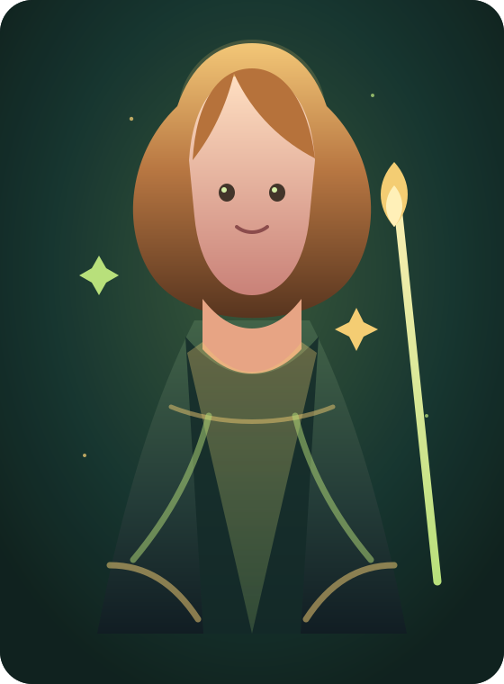

Fairy Godmother Coach
把混乱变成下一步，把愿望变成今天能做的事。
三位神话系仙女教母会分别照看生活、学习与工作，先听见目标，再看见阻力，最后把它拆成温柔但明确的行动仪式。

炉火与丰饶原型
赫丝塔·炉心
温柔校准你的生活节奏，先把心安顿好。
00
个人画像
画像会影响教母的语气、拆解尺度和每日提醒。
02
教母的即时指导
阻力识别
未开始
行动尺度
微行动
陪伴节奏
安顿 → 推进 → 复盘
03
今日仪式闭环
04
三层拆解：愿望、路径、下一步
说出你想抵达的状态
先把目标放到光里，而不是把自己放到压力里。
拆掉最重的阻力
把“我要改变”改写成“我先处理哪一个卡点”。
只开始第一个动作
一个清楚的小动作，会比一整套宏大计划更有魔法。
05
今日推进板
生成指导后，教母会把行动层放到这里追踪。
06
星尘专注仪式
生成指导后，我会给你一个刚刚好的第一步。按下开始，就让世界安静一小会儿。
15:00
07
教母对话间
08
复盘与明日魔法
成长档案
09
成长魔法书
还没有足够记录。先完成一次今日闭环。
画像、目标、阻力和复盘会在这里合成下一步指导上下文。